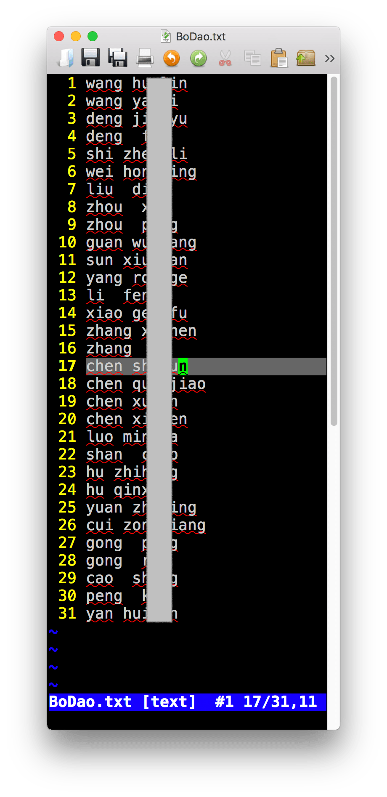
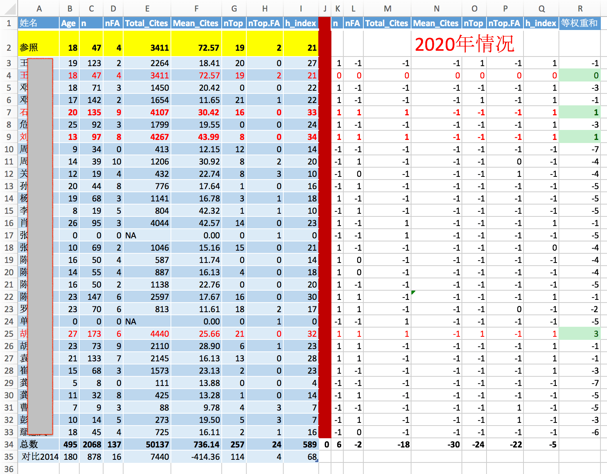

如何获取某人的发文章数据？
使用R获取Scopus上研究者文章数据
以获取武汉病毒所所有博导的发文章数据为例。
一 获取名单。
列出你需要获得数据的人名和研究所。 人名和单位名字都必须是英文。
从此链接进入，武汉病毒所导师介绍。 可以看到31为博士生导师的姓名，通过手动或者软件获得这些导师的人名拼音——即英文名。将这些英文名写入一个txt文件。下面切图我隐去了他们的姓名。
如：

从scopus获取名单上教授的发文章数据。
直接使用一下代码，其中需要路径，使得程序可以找到第一步中存储的名字列表。
affil_id = ‘60027289’ 是武汉病毒所的单位代码。如果需要其他研究所，请自行查找单位代码。
aff = ‘virology’ 是病毒所的英文名关键字。
api_key =‘xxx’ 是你需要获取scopus一个帐号，以此来获取数据。
rm(list = ls())
library('rvest')
library('dplyr')
library('scholar')
# install.packages('scholar')
library(rscopus)
# source('Rcode/function/function.GS.R')
dir.data = 'wuhan'
fn.namelist = 'wuhan/BoDao.txt'
outdir = 'wuhan/out'
# Read names from fn.namelist
# download the profile html pages from GS, save them to local drive.
dir.create(outdir, showWarnings = F, recursive = T)
dir.create(dir.data, showWarnings = F, recursive = T)
tmp = readLines(fn.namelist, skipNul = T)
name.tab = as.matrix(read.table(text=tmp,header = F))
name.tab
api_key = ''
# api_key = '4f1f89830728c357bd1b9e5b18007dbf'
rscopus::set_api_key(api_key)
id=get_api_key(api_key)
aff = 'virology'
nx = nrow(name.tab)
yl=NULL
xmat=NULL
for(i in 1:nx){
aff = 'Wuhan'
xthis = paste(name.tab[i, ], collapse = ' ')
message(i, '/', nx, '\t', xthis)
first_name = name.tab[i, 2]
last_name = name.tab[i, 1]
x = get_author_info(first_name = first_name,
last_name = last_name,
affil_id = '60027289',
verbose = FALSE,
query = paste0("AFFIL(", aff, ")")
)
x
# x = author_df(first_name = first_name,
# last_name = last_name,
# affil_id = '60027289',
# verbose = FALSE,
# query = paste0("AFFIL(", aff, ")") )
auids = x$au_id
nres = nrow(x)
# if(nres>1){
# pt1= sprintf("\\b%s\\b", name.tab[i, 2])
# pt2= sprintf("\\b%s\\b", name.tab[i, 1])
# id=which(grepl(pt1, x$auth_name) &
# grepl(pt2, x$auth_name) )
# id
# if(length(id)<1){
# stop()
# }
# x=x[id, ]
# }
nres = nrow(x)
y = NULL
if( !all(is.na(auids) )){
if(nres > 1){
message('\t', nres, ' au-id exit')
print(x)
}
for(j in 1:nres){
# use id to get author pub data.
tmp = try(
author_list(au_id = auids[j], verbose = FALSE,
general = FALSE, all_author_info = F,
count=500),
silent = TRUE
)
View(tmp)
if(is.data.frame(tmp)){
y = plyr::rbind.fill(y, tmp)
}
}
}else{
message('\t', 0, ' au-id exit')
print(x)
}
# x
if(!all(is.na(x))){
xmat = rbind(xmat, x)
}else{
stop()
}
yl[[i]] = y
}
# ret = cbind(name.tab, xmat)
# saveRDS(xmat, 'xmat.RDS')
saveRDS(yl, 'wuhan/yl.RDS')
程序结束后，会将获取的数据存储与文件yl.RDS
三 分析数据
通过前一步获取的数据，分析几项内容： 学术年龄， 文章数，一作文章数，总引用， 平均引用， 顶级文章数目， 一作顶级期刊数目， h因子。
完成这项需要另外一个手动完成的文件，就是顶级期刊名字。
下面是针对武汉病毒所的专业方向而选择的顶级期刊列表，包含名字和影响因子——Journal of Virology的影响因子虽然小，但却是病毒专业方向的顶级期刊。

然后使用一下代码：
# xmat = readRDS('xmat.RDS')
yl = readRDS('wuhan/yl.RDS')
jn = as.matrix(read.table('wuhan/TopJ2.txt', sep=','))
jn
nx=length(yl)
jj=NULL
fx <- function(xx){which(grepl(paste0('^', xx, '$') , x$journal) ) }
hinx <- function(x){
for(i in 1:length(x)){
if(length(which(x>=i)) <i ){
return(i)
}
}
}
xmat = NULL
for(i in 1:nx){
x = yl[[i]]
# jj = c(jj, x$journal)
top.j = apply(cbind(jn[, 1]), 1, fx)
top.id = unlist(top.j)
top.fa = sum(which(x$auth_order == 1) %in% top.id)
top.n = length(unlist(top.j))
if(is.null(x)){
nt=0
}else{
tt = as.Date(x$cover_date)
nt = 2020 - as.numeric(format(min(tt), '%Y'))
}
xi = c(
nt,
nrow(x),
sum(x$auth_order==1, na.rm = TRUE),
sum(x$citations, na.rm = TRUE),
mean(x$citations, na.rm = TRUE),
top.n,
top.fa,
hinx(x$citations)
)
xmat = rbind(xmat, xi)
}
xmat = data.frame(name.tab, xmat)
colnames(xmat) = c('Family', 'First', 'Age',
'n', 'nFA', 'Total_Cites',
'Mean_Cites', 'nTop', 'nTop.FA', 'h_index'
)
write.table(xmat, 'wuhan/out.csv', col.names = T, row.names = F, sep='\t', quote = F)
View(xmat)
程序完成后，会存储结果到out.csv文件。
四 额外的分析。
这部分数据分析比较简单，我使用WPS表格完成，如果数据量大或者需要不断重复验证，也完全可以使用R来完成。
使用WPS表格分析的结果。

作为案例，数据中的人名我就不展示了。
如果有人愿意以此做个更大范围的研究，欢迎合作。
{kind=link}